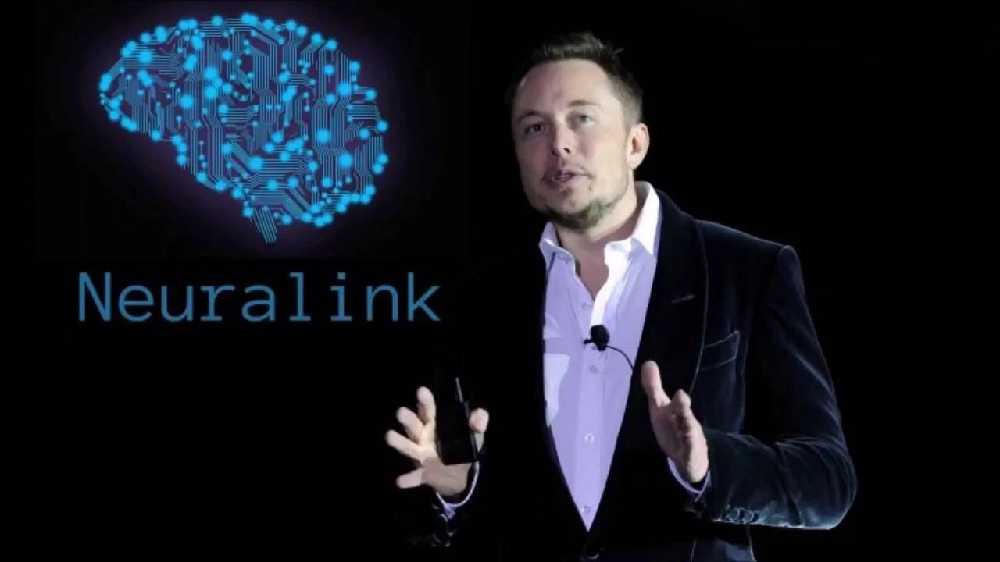

Invenções e Inovações
Hyperloop
Em agosto de 2013, Elon Musk propôs o conceito do Hyperloop, um sistema de transporte de alta velocidade que utilizaria cápsulas em tubos de baixa pressão para conectar cidades, com velocidades de até 700 mph. Embora tenha alegado ser mais seguro e mais barato do que outros meios de transporte, o projeto enfrentou ceticismo, mas atraiu equipes de estudantes para competições de protótipos. Musk tem promovido o desenvolvimento dessa ideia.
Inteligência Artificial e Neuralink
Elon Musk se tornou copresidente da OpenAI, uma organização sem fins lucrativos dedicada à promoção da inteligência artificial para o benefício da humanidade. Além disso, ele apoiou o empreendimento Neuralink, que visa desenvolver dispositivos para implantação no cérebro humano, permitindo a fusão com software por meio de um microchip que se conecta a smartphones via Bluetooth.
Trem de Alta Velocidade
Musk respondeu ao desafio do prefeito de Chicago para construir uma linha de trem de alta velocidade do aeroporto O'Hare ao centro da cidade em 20 minutos ou menos. Ele planejou um sistema de transporte chamado "loop" que não exigiria vácuo para eliminar o atrito do ar, diferente do Hyperloop. Embora tenha se comprometido a cobrir os custos iniciais, o projeto enfrentou atrasos e prioridades mudaram.
Lança-chamas da The Boring Company

A The Boring Company, de Elon Musk, também vendeu lança-chamas por US$ 500 cada, com a alegação de ter vendido 10.000 deles em apenas um dia. Elon Musk é conhecido por suas visões e empreendimentos ambiciosos em várias áreas, desde transporte de alta velocidade até inteligência artificial e neurotecnologia.